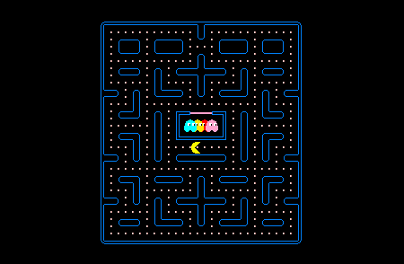
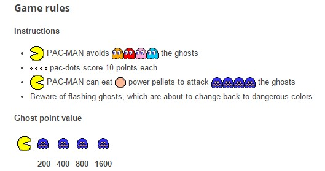
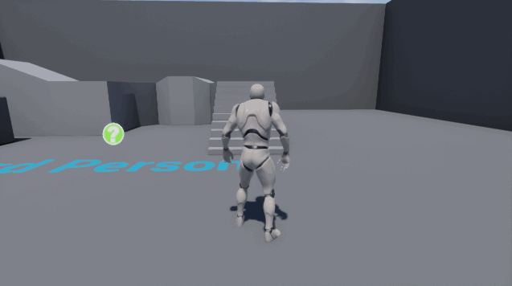
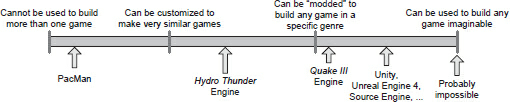

Coder un Tower Defense
(Utilisez les flèches pour naviguer)Programme
- Théorie du jeu & Archi. logicielle (20')
- Codage des tuto 1 & 2 (1h)
- Rendre votre jeu cool (45')
Partie 1 - Ça théorise dur
I - Comment développer un jeu ?
- Avoir un but Au hasard : "défendre sa base contre des vagues d'ennemis"
- Penser aux interactions Genre : "placer des tours au sol"
- Savoir ce qu'on fait de sa caméra Vu l'avez vu venir : "vue du dessus"
Exemple : Pacman

Et après pas mal d'iterations, on fixe les règles

(Ça se fait progressivement en jouant au prototype)
Exo bonus: Remplir un GDD
Pourquoi un "Game Design Document" ?
- Savoir quoi faire
- Identifier les problèmes
- Suivre les changements
Pour les plus curieux sur la théorie du jeu, la référence c'est :
"The Art of Game Design: A Book of Lenses" par Jesse Schell
Ok, mais comment développer un jeu ??
Ça arrive, mais on vas y aller par étape
Un moteur de jeu |
Un jeu |
|
 |
 | |
| Sans moteur | Y'a pas de jeu |
Il existe de nombreux moteurs de jeux
(Mais on peut pas s'en servir pour le projet)
II - Comment développer un moteur de jeu ?
- Pleurer
- Sécher ses larmes et réfléchir
Déja, le moteur n'a pas a être réutilisable
Ce qui signifie que sur un moteur de jeu complet...
Au final, ce qu'il nous reste à découvrir, c'est le gameplay et le principe de systèmes
(Et si vous voulez plus d'info, go checker "Game engine architecture" par Jason Gregory )III - Besoins du projet tower defense
On les liste par éléments
| Tours | Tirer; Affichage; Cercle d'attaque; Position; Animation; Stats; |
| Monstres | Déplacement; Pathfinding; Animation; Stats; Affichage; Position; |
| Carte | Affichage; Grille; Charger .itd; |
| Jeu | Vagues; Boutique; Améliorations; Construction; Interfaces; Inputs; |
On abstrait pour éviter les répétitions
| Entités | Affichage; Position; Animation; Stats; |
| Tours | Tirer; Cercle d'attaque; |
| Monstres | Déplacement; Pathfinding; |
| Carte | Grille; Charger .itd; |
| Jeu | Interfaces; Inputs; |
| Subsystems | Vagues; Boutique; Améliorations; Construction; |
Pas la peine d'aller plus loin pour le moment :
Avec cette base, on peut répondre de façon simple à beaucoup de problèmes
(système de constructions, vagues, structure logicielle, ...)
ITS TIME TO CODE SOME SHIT
(Mais pour les plus curieux...)Partie 2 - Codage des tutos
Mise en route
Ouvrez le dossier 'code' avec un éditeur de texte. Puis suivez le 'readme.md'
(Déja, soyez sûr d'avoir cmake)I - Entity
On vas créer une nouvelle classe entité
#include "test"
int main() {
int test = "hello";
}
- Fact: Computer graphics are awesome
- Fact: OpenGL is a mess (of user friendliness)
- Fact: Blender is mostly a black box
- my own opinion: you can never fully understand something which you have never made yourself
- consequence: one should develop one's own renderer
- this course wants to be the next best thing